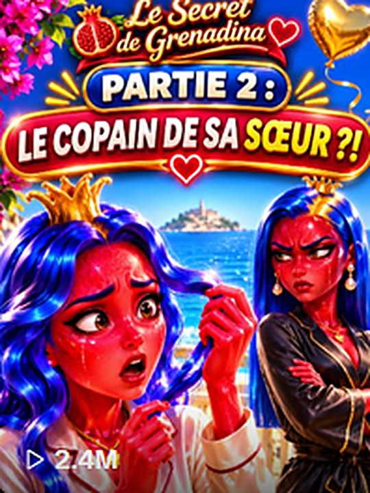
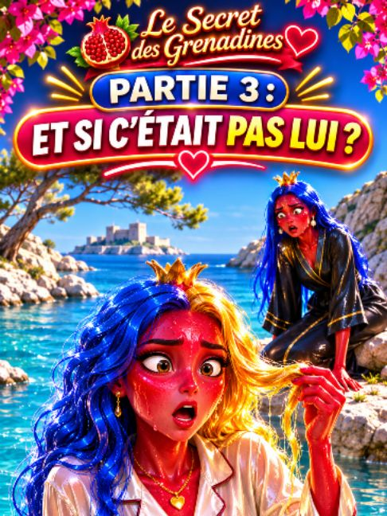
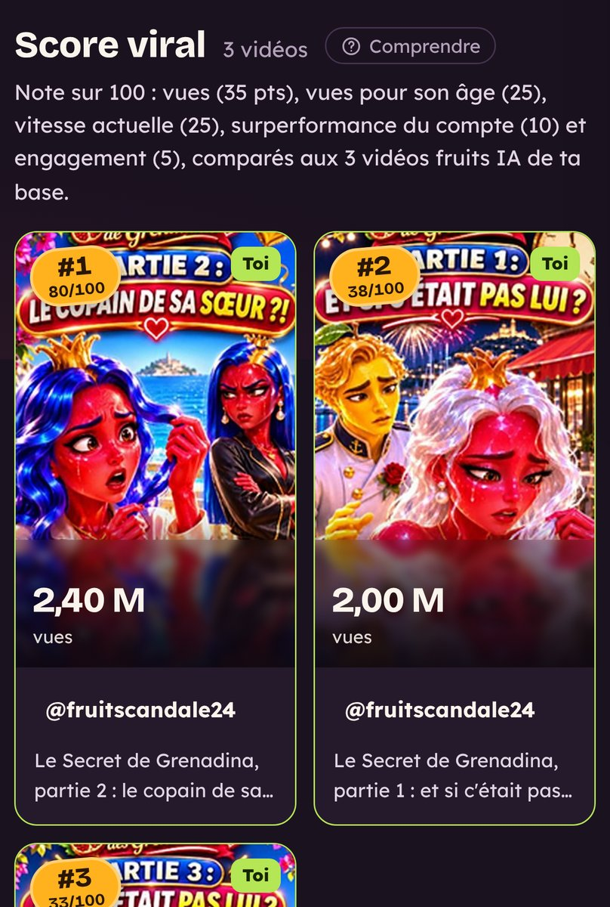
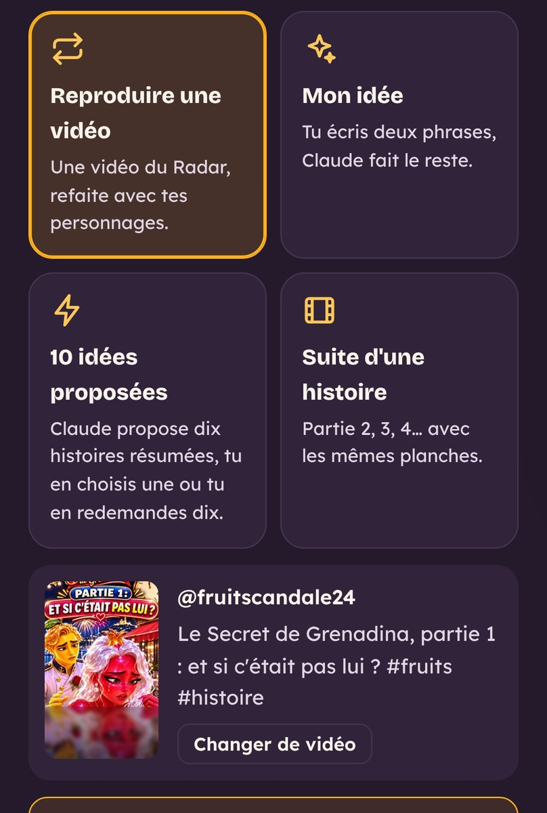
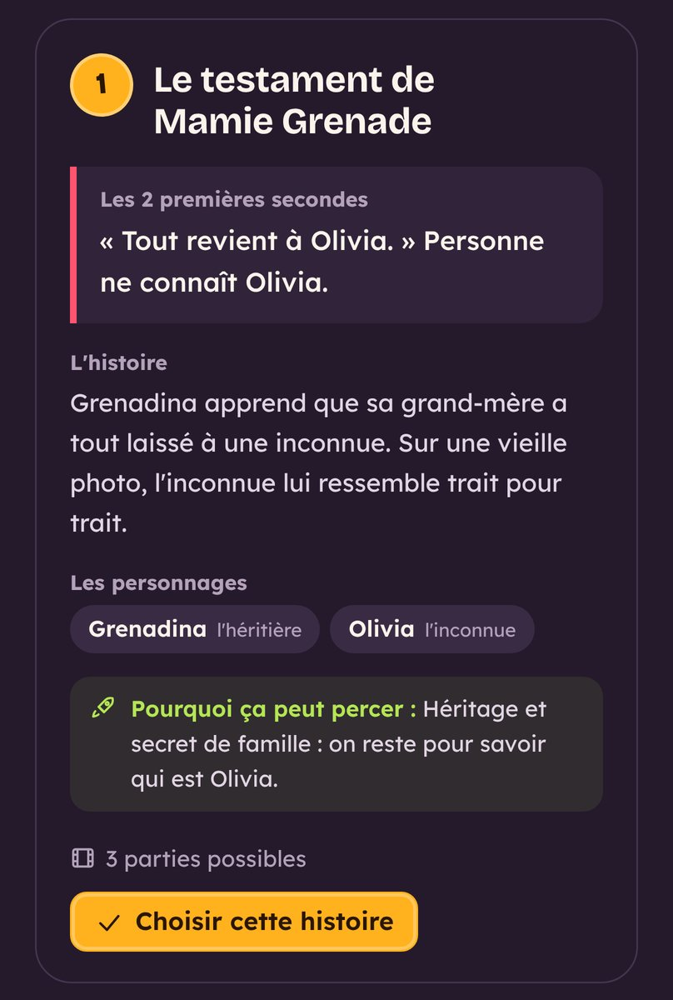
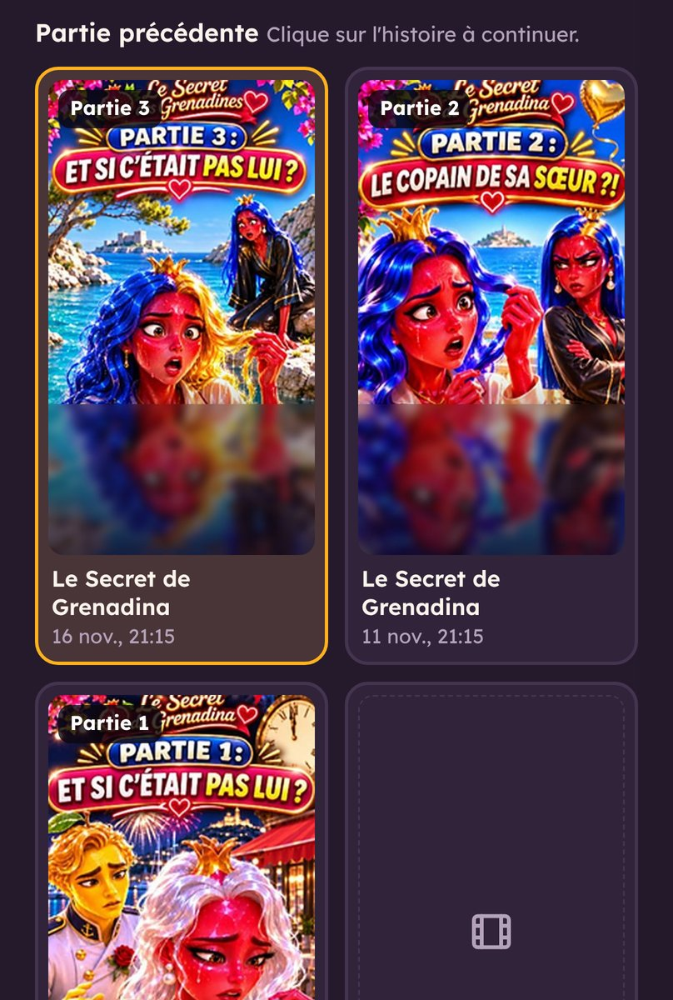

Bienvenue surFruitRadar
Des millions de vues, en automatique.
FruitRadar est une extension Chrome qui crée tes vidéos TikTok de fruits IA, de l'idée à la publication.
- Il repère les vidéos de fruits IA qui percent.
- Il fabrique la tienne : histoire, images, clips, montage.
- Tu publies : elle t'attend, prête, dans TikTok.
- 73,7 Kabonnés TikTok
- 5,5 Mvues sur 3 vidéos
- 2,4 Mvues sur une vidéo
Chiffres de mon compte TikTok, relevés en novembre.
Voir l'offre FruitRadarTrois de mes vidéos5,5 millions de vues à elles trois


Ce sont mes chiffres, pas une garantie.
Ce que fait FruitRadar
- Le Radar
- Le Radar parcourt TikTok, repère les vidéos de fruits IA qui percent et leur donne une note sur 100. Tu sais quoi refaire.
- L'automatisation
- Tu choisis une vidéo ou une idée et tu cliques une fois. Script, images, clips, montage, publication : tout s'enchaîne, et tu peux tout régler.
- Ce qu'il te faut
- Un ordinateur avec Google Chrome, et tes comptes Claude, ChatGPT, Grok et CapCut. FruitRadar s'en sert à ta place, dans ton navigateur.




FruitRadar
25,99 €par mois
- Le Radar : les vidéos de fruits IA qui percent sur TikTok
- L'automatisation : script, images, clips, montage, publication
- Les mises à jour, en un clic
Sans engagement : tu arrêtes en ligne quand tu veux.
Extension Chrome, sur ordinateur. Elle travaille avec tes comptes Claude, ChatGPT, Grok et CapCut.